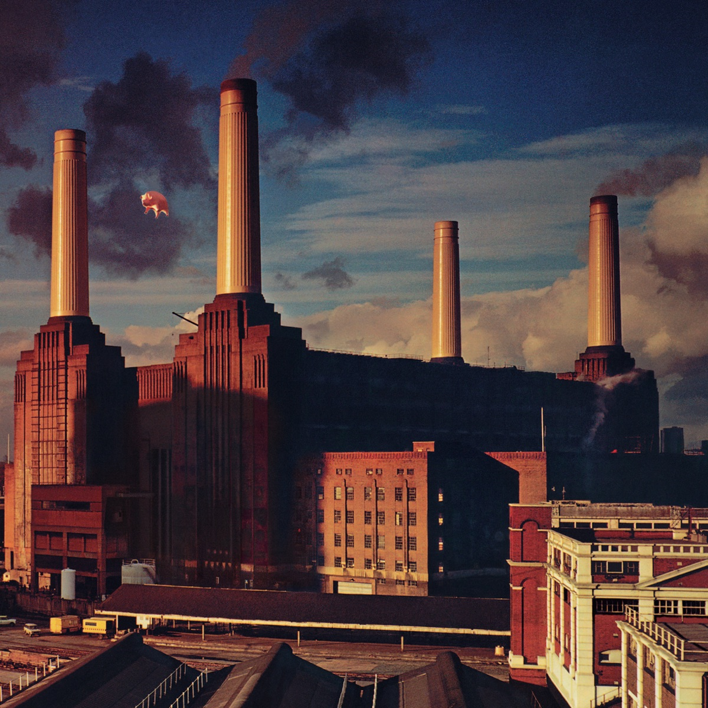
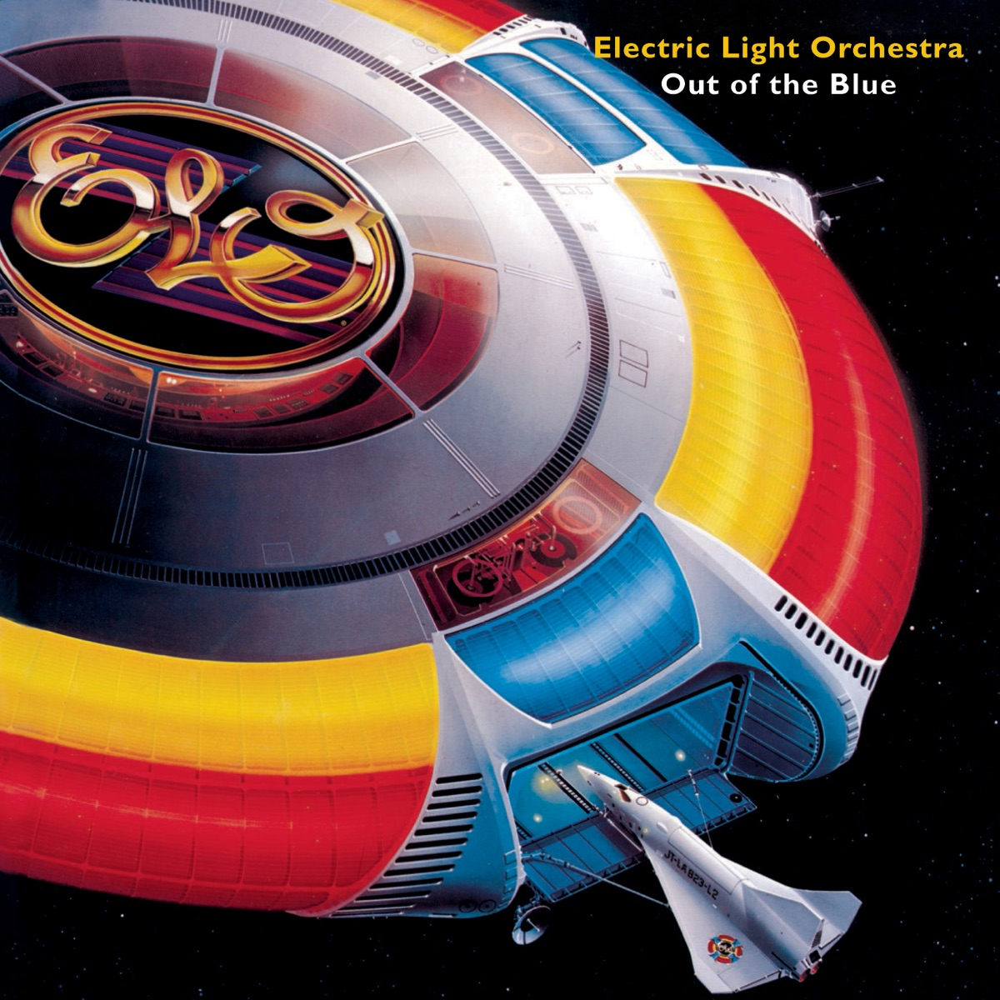
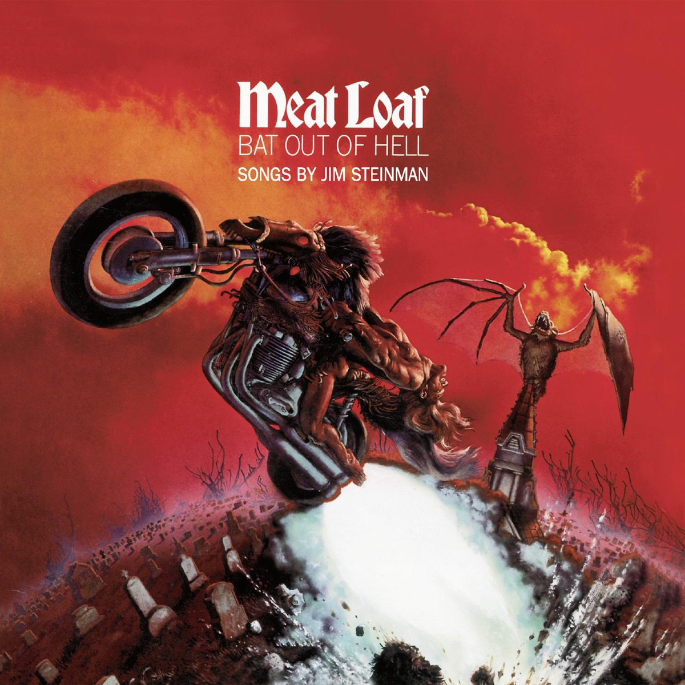

SoR Magazine Special · 1977: het beste albumjaar? · verhaal 4 van 7
Perfectie in de studio
Solo's van gitaristen die werden gewist tot er één klopte, een orkest in München, een plaat die twee jaar werd afgewezen: de gepolijste, dure kant van 1977, tegenover punk.
← Vorig verhaal: Punk en new wave Foto: Albumhoes · afbeelding van Apple Music, getoond als citaat bij de bespreking
Foto: Albumhoes · afbeelding van Apple Music, getoond als citaat bij de besprekingEen studio van de band zelf
Op 28 oktober 1977 verschenen in het Verenigd Koninkrijk drie platen op dezelfde dag: Never Mind the Bollocks van de Sex Pistols, News of the World van Queen en Out of the Blue van het Electric Light Orchestra. Twee ervan waren het soort plaat waar punk zich tegen afzette: groot, duur en tot in de details afgewerkt. Over die kant van 1977 gaat dit verhaal. Het was het jaar waarin de studio een instrument werd, waarin bands maandenlang aan één geluid werkten en waarin dat werk nog steeds een groot publiek vond.
Het begint in januari. Pink Floyd bracht op 21 januari Animals uit, opgenomen in Britannia Row in Londen. Dat was geen gehuurde studio: de band had die in 1975 zelf ingericht in een blok kerkzalen. Wie het geluid in eigen hand wilde houden, kon het nu letterlijk bezitten. Het album was losjes gebaseerd op Animal Farm van George Orwell, met honden, varkens en schapen als beeld voor de klassen van een samenleving, en het was het eerste Floyd-album zonder schrijfcredit voor Richard Wright. In het Verenigd Koninkrijk haalde het nummer 2, in de Verenigde Staten nummer 3.
Punk stond intussen te trappelen. John Lydon droeg een Pink Floyd-shirt met het woord I hate erboven. Later noemde hij dat een grap, en hij droeg het volgens de bronnen al begin jaren zeventig. De ironie is dat drummer Nick Mason in 1977 in dezelfde studio, Britannia Row, het album Music for Pleasure van The Damned produceerde. Voor de studio maakte het blijkbaar niet uit wie er binnenkwam.
Op 4 februari volgde Rumours van Fleetwood Mac. Het album werd opgenomen op 24-sporen tape, grotendeels in Sausalito in Californië. De masterbanden waren door het vele afspelen zo beschadigd dat de technici ze moesten redden: een vari-speed oscillator corrigeerde de snelheid en een Aphex Aural Exciter herstelde de toppen. Het album stond 31 weken, niet aaneengesloten, op nummer 1 in de Verenigde Staten. Op 11 februari bracht Jethro Tull Songs from the Wood uit. Ian Anderson produceerde het zelf in Morgan Studios en de band maakte een draai naar folkrock. Op 25 februari kwam het eerste album van Peter Gabriel, na zijn vertrek bij Genesis. Producer Bob Ezrin haalde Robert Fripp op gitaar en Tony Levin op bas, en de opnamen vonden plaats in Toronto en Londen. De hoes kwam van Hipgnosis.

Foto: Albumhoes · afbeelding van Apple Music, getoond als citaat bij de bespreking

Twee dagen met Steve Gadd
Het meest bewonderde studioalbum van het jaar kwam pas op 23 september. Aja van Steely Dan werd in 1976 en 1977 opgenomen in zes studio's in Los Angeles en New York, met bijna veertig sessiemuzikanten. Producer was Gary Katz. Bandleden Walter Becker en Donald Fagen schreven de nummers en huurden de beste muzikanten die ze konden vinden. Ze lieten ze spelen tot het klopte.
Een goed voorbeeld is het titelnummer. Het duurt bijna acht minuten en is samengesteld uit afzonderlijke delen. Het middenstuk komt uit een oudere instrumental, Stand by the Seawall, en een analist telt in het geheel vierentwintig afzonderlijke onderdelen. De basisopnamen op twee-inch tape met 24 sporen gebeurden in een kleine studio aan Hollywood Boulevard, Producers' Workshop, met Bill Schnee aan de knoppen. De overdubs volgden in Village Recorders, met Roger Nichols. Veel bronnen noemen alleen Village, maar dat klopt dus maar half.
Voor de drumpartij vloog Steely Dan Steve Gadd uit New York over. Hij kreeg twee sessiedagen. Aja was het eerste nummer van de tweede dag, en van de vier nummers die Gadd opnam kwam alleen dit op het album. Die ochtend had hij al twee hits voor een andere artiest ingespeeld. Zijn partij was een uitgeschreven chart van Larry Carlton, volgens Katz zestien pagina's op een hoefijzer van muziekstandaards. Denny Dias, de gitarist van de band, zei later dat de akkoorden absoluut niet op gitaar te spelen waren. Gadds drumsolo was de eerste op een plaat van Steely Dan. Volgens Katz speelde hij hem in één take en is dat de take die je hoort; volgens Wikipedia waren het er twee, aan elkaar gemonteerd.
Foto: Albumhoes · afbeelding van Apple Music, getoond als citaat bij de besprekingOok Wayne Shorter speelt op het nummer. Volgens het verhaal, zoals Wikipedia het optekent, zei Shorter eerst nee toen Katz hem namens Becker en Fagen vroeg. Daarna stond Dick LaPalm, de manager van Village Recorders, die Shorter kende van sessies met Weather Report, voor hen in. Shorter bereidde zich voor met zo'n half uur toonladders op piano, nam drie of vier takes op en wilde de delen voor en na zijn solo horen.

Aja, het titelnummer: bijna acht minuten waarin Gadd en Shorter de hoofdrol krijgen.
De solo die niet wilde lukken
Dat perfectie niet altijd snel ging, laat Peg zien. Het was het laatste nummer dat voor Aja werd opgenomen en het enige in New York, in A&R Studios met Elliot Scheiner als engineer. Rick Marotta speelde drums en Michael McDonald zong de meerstemmige koren.
De gitaarsolo was het probleem. Meerdere gitaristen probeerden het, onder wie Robben Ford en, volgens Scheiner, Rick Derringer. Hun bijdragen werden gewist. Hoeveel pogingen het er precies waren, weet niemand zeker: Wikipedia noemt zeven gitaristen, een andere bron schat vijf tot acht. De solo die op de plaat staat, is van Jay Graydon, die hem in Los Angeles speelde via een compressor die bekendstaat als de orange squeezer. Scheiner vertelde dat alleen al een sessie zes tot zeven uur kostte en dat er daarna nog een paar dagen overheen gingen.
In november 1977 verscheen Peg als single. Het haalde nummer 11 in de Billboard Hot 100 en stond negentien weken in de lijst. De La Soul sampelde het in 1989 voor Eye Know. Het album kwam in het Verenigd Koninkrijk op nummer 5, werd in de Verenigde Staten 2x platina en staat sinds 2010 in de National Recording Registry van de Library of Congress. Onder audiofielen wordt het vaak als testplaat genoemd.
Peg, de single met de koren van Michael McDonald en de solo van Jay Graydon, het nummer waarvoor de solo's van andere gitaristen werden gewist.
Zomer in München, Wales en Londen
Terwijl Steely Dan in de Verenigde Staten aan de laatste nummers werkte, trokken Europese bands de zomer in. Rush nam in juni en juli A Farewell to Kings op in Rockfield in Wales en mixte het in Advision in Londen. Producer was Terry Brown, en de band gebruikte meer synthesizers dan voorheen, waaronder een Minimoog en een Taurus. Het album verscheen op 29 augustus. Queen nam tussen 6 juli en 16 september News of the World op in Sarm East en Wessex Sound in Londen, als producers de band zelf en Mike Stone.
Het meest uitbundig was Jeff Lynne. Hij schreef het hele dubbelalbum Out of the Blue, volgens eigen zeggen, in ongeveer drieënhalve week in een gehuurd chalet in de Zwitserse Alpen. De opnamen liepen van mei tot augustus in Musicland Studios in München, met Reinhold Mack als engineer en het orkest onder leiding van Louis Clark. Het album kwam op 24 oktober in de Verenigde Staten uit en op 28 oktober in het Verenigd Koninkrijk, en bereikte beide keren nummer 4. Volgens het boekje bij de heruitgave van 2007 werden er ongeveer tien miljoen van verkocht. In de Verenigde Staten zorgden goedkope cut-out-exemplaren voor een verkoopprobleem.

Foto: Albumhoes · afbeelding van Apple Music, getoond als citaat bij de besprekingDe tournee van 1978 liet zien dat grootse plannen ook aan het podium konden knagen. De set was een ruimteschip, met een van de eerste lasershows. Het ontwerp was duur en problematisch: de akoestiek was slecht en de liften liepen vast. Wat het precies kostte, is niet vast te stellen.

Mr. Blue Sky, uit Out of the Blue: strijkers, koor en een productie die elke seconde vult.
Bat Out of Hell: een plaat die niemand wilde
Ook Bat Out of Hell was een plaat waarin weinig aan het toeval werd overgelaten. Producer Todd Rundgren nam het album in 1975 en 1976 op in onder andere Bearsville, Utopia Sound, de Hit Factory en House of Music. Hij verzorgde grotendeels de arrangementen, terwijl Jim Steinman ideeën neuriede, en speelde zelf gitaar, onder meer de motorsolo. Roy Bittan en Max Weinberg van de E Street Band speelden mee.
Daarna wilde geen platenmaatschappij het hebben. Volgens Meat Loafs eigen verhaal werd het album ruim twee jaar afgewezen, onder anderen door Clive Davis van CBS. Steve Popovich van het kleine Cleveland International nam het uiteindelijk aan. Het album verscheen op 21 oktober 1977, kwam traag op gang en groeide via radio en optredens. In het Verenigd Koninkrijk stond het in 2019 al 522 weken in de lijst en in Nederland haalde het nummer 1. Over de verkoop lopen de cijfers uiteen, maar het gaat naar schatting om tientallen miljoenen exemplaren.
Het langste en bekendste voorbeeld van die bombast is Paradise by the Dashboard Light, een nummer van ruim acht minuten dat is opgebouwd als een korte musical. Een jongen en een meisje zitten in een geparkeerde auto, de jongen wil dat het meisje ja zegt en het meisje wil eerst een belofte. Ellen Foley zong de rol van het meisje. Halverwege hoor je een honkbalverslag van Phil Rizzuto, die jarenlang de wedstrijden van de New York Yankees becommentarieerde, dat dient als een knipoog bij wat er in de auto gebeurt.

Foto: Albumhoes · afbeelding van Apple Music, getoond als citaat bij de bespreking
28 oktober
De drie releases van 28 oktober maken het contrast tussen perfectie en punk scherper dan het in de studio was. Never Mind the Bollocks werd opgenomen in Wessex, dezelfde studio waar Queen in die zomer werkte, met producer Chris Thomas en engineer Bill Price. Steve Jones deed urenlang gitaaroverdubs en speelde het grootste deel van de bas zelf. Dat is studiowerk in de gewone zin van het woord. Of je daaruit mag concluderen dat ook punk gepolijst was, is een lezing van die feiten, geen vaststaand oordeel. Het laat wel zien dat de grens minder scherp lag dan de slogans deden voorkomen.
Volgens Wikipedia hield Queen News of the World sober, in verband met de opkomst van punk, al zei Brian May dat de terugkeer naar de basis al gepland was. Daar hoort een anekdote bij die mondeling is overgeleverd: Sid Vicious, die met de Sex Pistols in dezelfde studio opnam, zou Freddie Mercury hebben gevraagd of hij ballet voor de massa al had gebracht, waarop Mercury antwoordde dat ze hun best deden. De plaat haalde nummer 3 in de Verenigde Staten en werd er 4x platina. Op de single stond We Will Rock You, samen met We Are the Champions, uitgebracht op 7 oktober.

We Will Rock You, de single van 7 oktober 1977: stampen en klappen, bijna zonder opsmuk.
Het beeld van punk als tegenstander van de grote bands, Pink Floyd, Led Zeppelin, Yes en Genesis, is gangbaar geworden. De hitlijsten van 1977 laten een ander verhaal zien. Animals haalde nummer 2 in het Verenigd Koninkrijk, Aja nummer 3 in de Verenigde Staten, Out of the Blue nummer 4 aan beide kanten van de oceaan en News of the World nummer 3 in Amerika. Dat publiek koos niet tussen twee kampen.
Wat de perfectionisten gemeen hebben, is dat ze de studio als instrument gebruikten. Becker en Fagen lieten de solo's van gitaristen wissen tot er één klopte, Lynne liet een orkest aanrukken in München, en Rundgren bouwde Steinmans bombast uit tot een plaat. Dat maakt 1977 tot een jaar waarin technische zorg en publiek succes elkaar nog niet in de weg zaten, ook al zat punk het geluid aan alle kanten op de hielen.